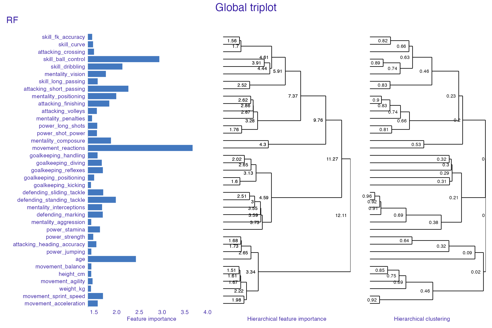
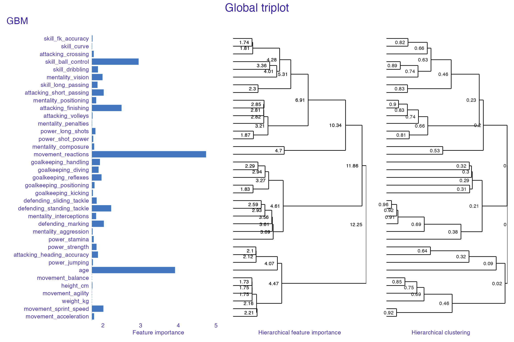
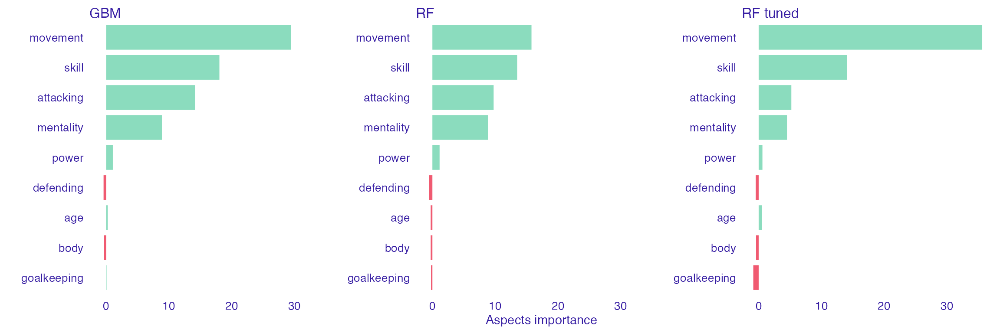
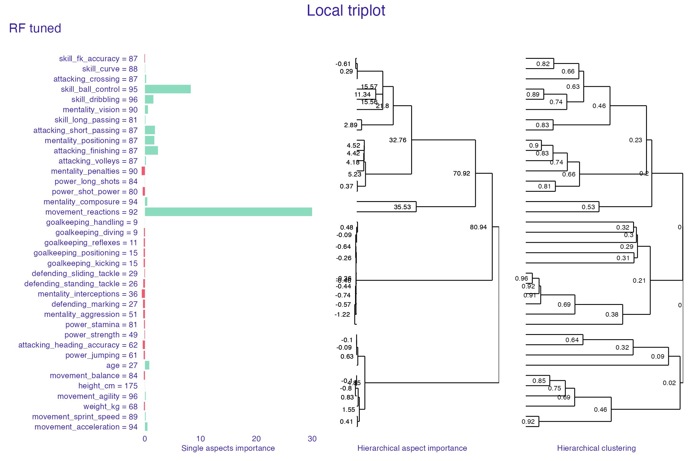

Usecase with FIFA 20 dataset
Katarzyna Pękala
2020-07-09
Source:vignettes/vignette_aspect_importance_fifa.Rmd
vignette_aspect_importance_fifa.RmdData
This vignette demonstrates the use of the triplot package on Fifa20 dataset. Dataset was downloaded from the Kaggle website, preprocessed and made available in DALEX package.
Dataset contains 37 features that describe each player performance. We will be exploring models that are predicting players value in Euro (in millions).
library("DALEX") library("triplot") data(fifa) fifa$value_eur <- fifa$value_eur/10^6 fifa[, c("nationality", "overall", "potential", "wage_eur")] <- NULL head(fifa[,c(1:6)])
#> value_eur age height_cm weight_kg attacking_crossing
#> L. Messi 95.5 32 170 72 88
#> Cristiano Ronaldo 58.5 34 187 83 84
#> Neymar Jr 105.5 27 175 68 87
#> J. Oblak 77.5 26 188 87 13
#> E. Hazard 90.0 28 175 74 81
#> K. De Bruyne 90.0 28 181 70 93
#> attacking_finishing
#> L. Messi 95
#> Cristiano Ronaldo 94
#> Neymar Jr 87
#> J. Oblak 11
#> E. Hazard 84
#> K. De Bruyne 82Build models for predicting players value
For the further analysis, we prepare 3 models:
- random forest,
- tuned random forest,
- gradient boosting machine.
Build explainers
For each of those models, we build DALEX explainer. Using explainers, simplifies further models analysis.
fifa_rf_exp <- DALEX::explain(fifa_rf, data = fifa[,-1], #without target coulmn y = fifa$value_eur, label = "RF", verbose = FALSE) fifa_rf_m_exp <- DALEX::explain(fifa_rf_mod, data = fifa[,-1], y = fifa$value_eur, label = "RF tuned", verbose = FALSE) fifa_gbm_exp <- DALEX::explain(fifa_gbm, data = fifa[, -1], y = fifa$value_eur, predict_function = function(m, x) predict(m, x, n.trees = 250), label = "GBM", verbose = FALSE)
Triplot for model
‘Triplot’ objects allow us to investigate the importance of each feature (plot on the left), features correlation (plot on the right) as well as the change hierarchical aspects importance (plot in the middle).
fifa_rf_tri <- model_triplot(fifa_rf_exp, B = 1, N = 5000) fifa_rf_m_tri <- model_triplot(fifa_rf_m_exp, B = 1, N = 5000) fifa_gbm_tri <- model_triplot(fifa_gbm_exp, B = 1, N = 5000) plot(fifa_rf_tri, show_model_label = TRUE, margin_mid = 0)

plot(fifa_rf_m_tri, show_model_label = TRUE, margin_mid = 0)
plot(fifa_gbm_tri, show_model_label = TRUE, margin_mid = 0)

fifa_vg <- list( "age" = "age", "body" = c("height_cm", "weight_kg"), "attacking" = c("attacking_crossing", "attacking_finishing", "attacking_heading_accuracy", "attacking_short_passing", "attacking_volleys"), "skill" = c("skill_dribbling", "skill_curve", "skill_fk_accuracy", "skill_long_passing", "skill_ball_control"), "movement" = c("movement_acceleration", "movement_sprint_speed", "movement_agility", "movement_reactions", "movement_balance"), "power" = c("power_shot_power", "power_jumping", "power_stamina", "power_strength", "power_long_shots"), "mentality" = c("mentality_aggression", "mentality_interceptions", "mentality_positioning", "mentality_vision", "mentality_penalties", "mentality_composure"), "defending" = c("defending_marking", "defending_standing_tackle", "defending_sliding_tackle"), "goalkeeping" = c("goalkeeping_diving", "goalkeeping_handling", "goalkeeping_kicking", "goalkeeping_positioning", "goalkeeping_reflexes"))
Investigate models for chosen instances (players)
For the instance level model analysis, we choose top player (value wise).
#> value_eur age height_cm weight_kg attacking_crossing
#> Neymar Jr 105.5 27 175 68 87
#> attacking_finishing attacking_heading_accuracy
#> Neymar Jr 87 62
#> attacking_short_passing attacking_volleys skill_dribbling skill_curve
#> Neymar Jr 87 87 96 88
#> skill_fk_accuracy skill_long_passing skill_ball_control
#> Neymar Jr 87 81 95
#> movement_acceleration movement_sprint_speed movement_agility
#> Neymar Jr 94 89 96
#> movement_reactions movement_balance power_shot_power power_jumping
#> Neymar Jr 92 84 80 61
#> power_stamina power_strength power_long_shots mentality_aggression
#> Neymar Jr 81 49 84 51
#> mentality_interceptions mentality_positioning mentality_vision
#> Neymar Jr 36 87 90
#> mentality_penalties mentality_composure defending_marking
#> Neymar Jr 90 94 27
#> defending_standing_tackle defending_sliding_tackle goalkeeping_diving
#> Neymar Jr 26 29 9
#> goalkeeping_handling goalkeeping_kicking goalkeeping_positioning
#> Neymar Jr 9 15 15
#> goalkeeping_reflexes
#> Neymar Jr 11aspects_top_player_rf <- predict_aspects(fifa_rf_exp, new_observation = top_player, variable_groups = fifa_vg) aspects_top_player_rf_m <- predict_aspects(fifa_rf_m_exp, new_observation = top_player, variable_groups = fifa_vg) aspects_top_player_gbm <- predict_aspects(fifa_gbm_exp, new_observation = top_player, variable_groups = fifa_vg) plot(aspects_top_player_rf, aspects_top_player_rf_m, aspects_top_player_gbm)

fifa_rf_m_tri_player <- predict_triplot(fifa_rf_m_exp, top_player) plot(fifa_rf_m_tri_player, show_model_label = TRUE, margin_mid = 0.2)

For comparison, for next analysis we pick one of the goal keeper’s prediction to be explained.
#> value_eur age height_cm weight_kg attacking_crossing
#> J. Oblak 77.5 26 188 87 13
#> attacking_finishing attacking_heading_accuracy attacking_short_passing
#> J. Oblak 11 15 43
#> attacking_volleys skill_dribbling skill_curve skill_fk_accuracy
#> J. Oblak 13 12 13 14
#> skill_long_passing skill_ball_control movement_acceleration
#> J. Oblak 40 30 43
#> movement_sprint_speed movement_agility movement_reactions
#> J. Oblak 60 67 88
#> movement_balance power_shot_power power_jumping power_stamina
#> J. Oblak 49 59 78 41
#> power_strength power_long_shots mentality_aggression
#> J. Oblak 78 12 34
#> mentality_interceptions mentality_positioning mentality_vision
#> J. Oblak 19 11 65
#> mentality_penalties mentality_composure defending_marking
#> J. Oblak 11 68 27
#> defending_standing_tackle defending_sliding_tackle goalkeeping_diving
#> J. Oblak 12 18 87
#> goalkeeping_handling goalkeeping_kicking goalkeeping_positioning
#> J. Oblak 92 78 90
#> goalkeeping_reflexes
#> J. Oblak 89aspects_gk_rf <- predict_aspects(fifa_rf_exp, new_observation = player_gk, variable_groups = fifa_vg) aspects_gk_rf_m <- predict_aspects(fifa_rf_m_exp, new_observation = player_gk, variable_groups = fifa_vg) aspects_gk_gbm <- predict_aspects(fifa_gbm_exp, new_observation = player_gk, variable_groups = fifa_vg)
plot(aspects_gk_rf, aspects_gk_rf_m, aspects_gk_gbm)

Session info
#> R version 4.0.2 (2020-06-22)
#> Platform: x86_64-apple-darwin17.0 (64-bit)
#> Running under: macOS Catalina 10.15.5
#>
#> Matrix products: default
#> BLAS: /Library/Frameworks/R.framework/Versions/4.0/Resources/lib/libRblas.dylib
#> LAPACK: /Library/Frameworks/R.framework/Versions/4.0/Resources/lib/libRlapack.dylib
#>
#> locale:
#> [1] en_US.UTF-8/en_US.UTF-8/en_US.UTF-8/C/en_US.UTF-8/en_US.UTF-8
#>
#> attached base packages:
#> [1] stats graphics grDevices utils datasets methods base
#>
#> other attached packages:
#> [1] gbm_2.1.5 ranger_0.12.1 triplot_1.3.0 DALEX_1.3.0
#>
#> loaded via a namespace (and not attached):
#> [1] Rcpp_1.0.5 compiler_4.0.2 pillar_1.4.4 ingredients_1.3.0
#> [5] iterators_1.0.12 tools_4.0.2 digest_0.6.25 evaluate_0.14
#> [9] memoise_1.1.0 lifecycle_0.2.0 tibble_3.0.2 gtable_0.3.0
#> [13] lattice_0.20-41 pkgconfig_2.0.3 rlang_0.4.6 foreach_1.5.0
#> [17] Matrix_1.2-18 patchwork_1.0.1 yaml_2.2.1 pkgdown_1.5.1.9000
#> [21] xfun_0.15 ggdendro_0.1-20 gridExtra_2.3 stringr_1.4.0
#> [25] knitr_1.29 desc_1.2.0 fs_1.4.2 vctrs_0.3.1
#> [29] rprojroot_1.3-2 grid_4.0.2 glmnet_4.0-2 glue_1.4.1
#> [33] R6_2.4.1 survival_3.1-12 rmarkdown_2.3.2 farver_2.0.3
#> [37] ggplot2_3.3.2 magrittr_1.5 splines_4.0.2 codetools_0.2-16
#> [41] backports_1.1.8 scales_1.1.1 htmltools_0.5.0 ellipsis_0.3.1
#> [45] MASS_7.3-51.6 assertthat_0.2.1 shape_1.4.4 colorspace_1.4-1
#> [49] labeling_0.3 stringi_1.4.6 munsell_0.5.0 crayon_1.3.4